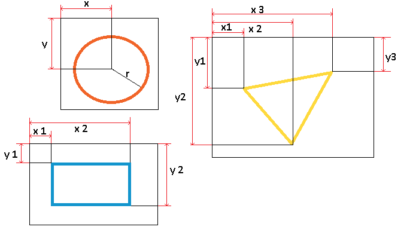

Значение и применение тега AREA
Тег <area> определяет интерактивную область в изображении-карте (элемент <map>), т.е. при клике на определённую область изображения происходят определённые действия, например, открывается отдельная страница с описанием данного участка изображения.
Атрибутами тега <area> мы указываем как координаты области (атрибут coords), так и тип необходимой нам фигуры (атрибут shape):
| Значение атрибута | Определение |
| default | Весь регион. |
| rect | Прямоугольная область (x1,y1,x2,y2). |
| circle | Круглая область (x,y,r- радиус). |
| poly | Многоугольную область (x1,y1,x2,y2,...,xn,yn). |

Порядок действий:
- Разместили изображение (тег <img>), которое мы в последствии будем использовать при составлении изображении-карты. В атрибуте usemap необходимо обязательно указать имя изображения-карты, которое мы будем использовать в элементе <map> (необходимо обязательно перед именем указать решетку).
- Размещаем изображение-карту (тег <map>), задаем единственный и обязательный атрибут элемента name (имя).
- Размещаем четыре тега <area>, которые определяют интерактивные области в изображении-карте:
- Первой мы задаем прямоугольную область (атрибут shape со значением "rect" ), она соответствует нашему первому изображению (первые два значения соответствуют верхнему левому углу, следующие два значения определяют правый верхний и нижний угол).
- Второй указываем круглую область (атрибут shape со значением "circle" ), она соответствует нашему второму изображению (первое значение соответствует координатам по оси x, а второе по оси y, третее определяет радиус).
- Что касается третей и четвертой фигуры, то они составлены по принципу многоугольной области (атрибут shape со значением "poly" ). Определяем необходимое количество точек на изображении, высчитываем координаты этих точек (Page Rule Redux) и указываем в таком порядке, чтобы браузер их мог соединить одной линией. На примере треугольника (третий рисунок): первая точка (координаты x и y вершины), вторая точка (координаты x и y левого нижнего угла) и третяя точка (координаты x и y правого нижнего угла).
Результат примера :
Выбери фигуру: